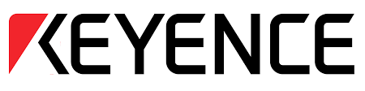
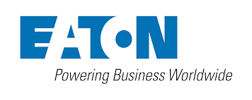
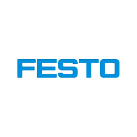
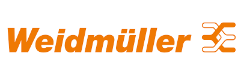
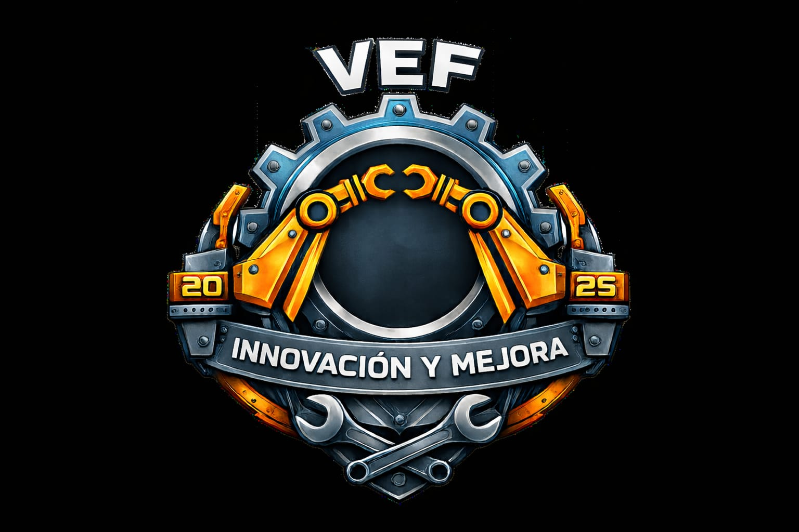

// 06. Marcas con Experiencia
Marca que confían en VEF




Desliza para ver más Marcas →

Control Preciso. Resultados Medibles.
"Transformar la industria mediante soluciones de automatización inteligente que maximicen la eficiencia operativa, minimicen errores de proceso y garanticen la continuidad productiva de nuestros clientes."
// Compromisos operativos:"Ser referentes latinoamericanos en automatización industrial 4.0, reconocidos por convertir datos de proceso en decisiones inteligentes y por la fiabilidad de nuestros sistemas de control en entornos de producción crítica."
// Metas estratégicas:Entregamos soluciones que generan ROI tangible: reducción de downtime, optimización de consumo energético y trazabilidad completa de procesos.
Diseñamos código limpio, estructuras de programación modulares y arquitecturas escalables que maximizan el rendimiento de cada ciclo de scan.
Anticipamos tendencias: desde CODESYS hasta integración con sistemas MES/ERP, preparando a nuestros clientes para la manufactura del mañana.
Cada línea de código es probada; cada variable de error tiene protocolo de respuesta.
Documentación clara de arquitecturas, versiones y cambios en sistemas PLC.
Trabajamos junto a operadores de planta, no solo para ellos.
Análisis post-implementación para optimizar tiempos de ciclo y diagnósticos.
| Competencia Típica | VEF Automatización |
|---|---|
| Entrega el PLC programado | Entrega el PLC + diagnóstico predictivo integrado |
| Responde cuando falla algo | Anticipa fallas mediante análisis de #errWord históricos |
| Programa en una marca | Especialista multi-plataforma (Siemens, Rockwell, Bosch Rexroth, Mitsubishi, CODESYS) |
| Código estándar | Bibliotecas propias de módulos de medición reutilizables |
| Soporte telefónico | Ingeniero asignado con conocimiento de tu arquitectura específica |
En VEF creemos que cada milisegundo de un ciclo de scan cuenta. Que cada variable de error (#errWord) es una oportunidad de mejora, no solo un número en un registro. Trabajamos donde la producción no puede detenerse, donde la precisión no es negociable, donde el futuro de la manufactura se escribe en código robusto y arquitecturas confiables.
No somos integradores. Somos arquitectos de continuidad productiva.




Desliza para ver más Marcas →